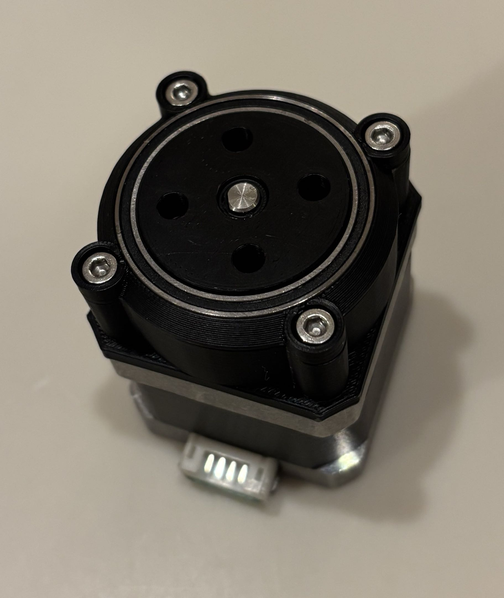
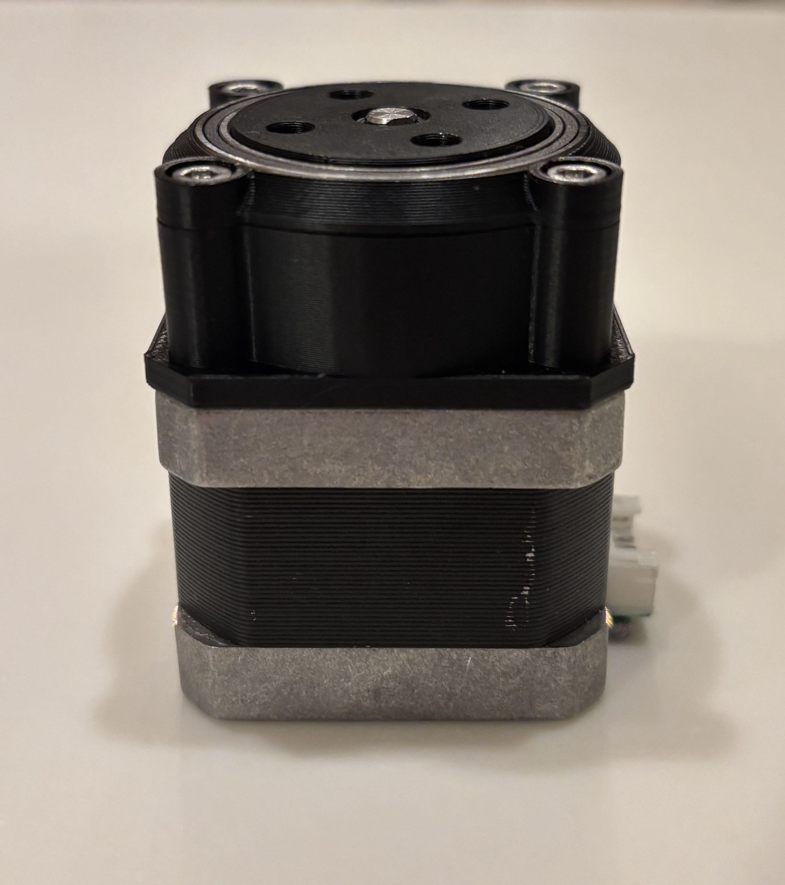
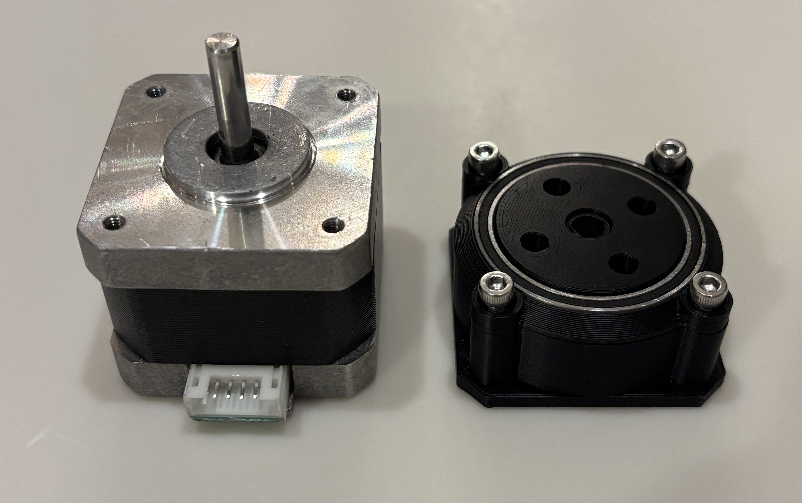
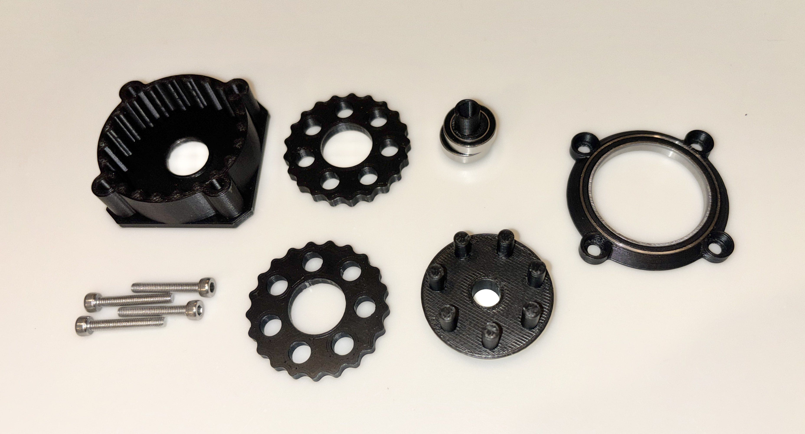

Cycloidal Drive (for Robot Arm)
Designed and fabricated a 21:1 cycloidal gearbox for a NEMA-17 stepper motor






Note: This is an active project and part of a larger robot arm that I am currently developing. The arm is going to have a full 6 DOF, it will use these cycloidial drives, and be controlled by an arduino setup.
UPDATE (4/4/26): I have added bearings in what I felt to be the most important locations: supporting the output, and the eccentric shaft. I am happy with the state of this prototype (in black), and I am proceeding with the larger robot arm project, which I am about halfway done with in SW as of today. More on that soon.UPDATE (3/18/26): My newest prototype (in pink), features the same 21:1 reduction, but in a form factor of just 20mm from the motor face! This is the exact length of the motor's shaft, which makes this design about as compact as possible. The holding torque of the steppers I currently have, according to their manufacturer, is about 0.22 N·m. This means that my ideal holding torque should be about 4.84 N·m, though my next step is to determine the actual value and see how that compares.
INITIAL UPLOAD: I discovered cycloidal gearboxes a few months ago and became interested in building one myself. Around the same time, I had been considering designing a robotic arm, and the two ideas fit together naturally. Cycloidal drives offer extremely low backlash and large reduction ratios in a compact form factor, making them well suited for robotic joints where precision and torque are important.
My current protoype (in yellow) features a 21:1 reduction (22 pins, 21 lobes) in a form factor of about 30 mm from the face of the stepper. I am currently working on getting that closer to 20 mm. I designed this from scratch in SolidWorks, and I prototyped in PETG (orange) and PLA (Yellow) on my Prusa CORE ONE FDM 3D printer.
The videos above shows the gearbox running on a NEMA 17 stepper motor powered by a 24 V power supply. Both the motor and power supply were salvaged from an old 3D printer. The system is controlled using an Arduino UNO Rev3 and an A4988 stepper driver, wired together in a simple breadboard circuit.
This project is still in progress, and I will continue to upload updates as the design evolves. Feel free to reach out if you have any questions.